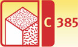
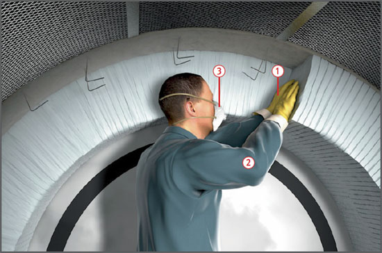

Keramikfaserprodukte
|
 |

Gefährdungen
- Aus Keramikfaserprodukten können bei der Verarbeitung krebserzeugende Faserstäube freigesetzt werden.
Allgemeines
- Keramikfaserprodukte werden häufig im Hochtemperaturbereich zur thermischen Isolierung von Öfen und Kesseln verwendet. Unter Keramikfaserprodukte fallen alle Aluminiumsilikat-Hochtemperaturwollen (ASW).
- Für eine Reihe von Anwendungsfällen liegen ungefährlichere Ersatzstoffe (z. B. Hochtemperaturglasfasern, Erdalkalisilikatwolle) vor.
- Vor der Verwendung von Keramikfasern prüfen, ob weniger gefährliche Fasern verwendet werden können.
Schutzmaßnahmen
Technische und organisatorische Maßnahmen
- Betriebsanweisung erstellen und Beschäftigte vor Beginn der Arbeiten, mindestens jedoch einmal jährlich, über die Gefahren und möglichen Schutzmaßnahmen unterweisen.
- Vorkonfektionierte Keramikfaserprodukte bevorzugen.
- Verpackte Produkte erst am Arbeitsplatz auspacken. Material nicht werfen.
- Für gute Belüftung am Arbeitsplatz sorgen. Aufwirbeln von Staub vermeiden.
- Keramikfaserprodukte mit einem scharfen Handwerkzeug auf einer flachen, festen Unterlage schneiden. Sägearbeiten nur unter Absaugung!
- Arbeitsplatz sauber halten und regelmäßig mit Staubsauger reinigen.
- Anfallenden Staub nicht zusammenfegen und nicht mit Druckluft abblasen.
- Für Absaugung und Reinigung nur zugelassene Industriestaubsauger / Entstauber mindestens der Staubklasse M verwenden.
- Verschnitte, Abfälle und Staubsaugerinhalte in verschließbaren Behältnissen, z. B. Tonnen oder Plastiksäcken, sammeln. Beim Verschließen der Plastiksäcke die Luft nicht herausdrücken.
- Beim Entfernen thermisch beanspruchter Keramikfasern besondere Sorgfalt aufwenden. Gefährdungen durch silikogenen Staub (Cristobalit) können auftreten.
- Arbeitsbereiche abtrennen.
- Material anfeuchten oder Verwendung von Faserbindemitteln.
- Auf wirksame Absaugung achten.
Persönliche und hygienische Schutzmaßnahmen
- Persönliche Schutzausrüstung benutzen:
- Schutzhandschuhe
 , z. B. nitrilbeschichtete Bauwollhandschuhe,
, z. B. nitrilbeschichtete Bauwollhandschuhe,
- ggf. Schutzbrille (möglichst Korbbrille),
- locker sitzende, langärmelige Schutzkleidung
 (vorzugsweise Einwegschutzanzüge Typ 5),
(vorzugsweise Einwegschutzanzüge Typ 5),
- Halbmaske mit Partikelfilter P 3 oder filtrierender Halbmaske FFP 3
 .
.
- Empfohlen wird Atemschutz mit Gebläseunterstützung (Typ TM3 P), fallweise auch gebläseunterstützte Helme (Typ TH3 P).
- Bei Arbeiten mittleren Risikos (Expositionskategorie 2, Tätigkeiten ab 40 Stunden, aber weniger als 40 Tage/Jahr): Halb-/Viertelmasken mit Filter P1 bzw. filtrierende Halbmasken FFP 2 tragen. Empfohlen wird Atemschutz mit Gebläseunterstützung (Typ TM2 P), fallweise auch gebläseunterstützte Helme (Typ TH2 P).
- Arbeitskleidung vor Verlassen der Baustelle ausziehen.
- Arbeits- und Straßenkleidung getrennt aufbewahren.
- Arbeitskleidung separat waschen.
- Vor Aufnahme der Arbeiten fettende, gerbstoffhaltige Hautschutzcreme benutzen.
- Nach der Arbeit gründlich waschen oder duschen.
- Im Arbeitsbereich nicht essen, trinken oder rauchen.
Entsorgung
- Zur ordnungsgemäßen Beseitigung Verschnitt und Abfälle sowie Staubsaugerinhalt in dicht verschließbaren Behältern und Säcken sammeln.
Arbeitsmedizinische Vorsorge
- Arbeitsmedizinische Vorsorge nach Ergebnis der Gefährdungsbeurteilung veranlassen (Pflichtvorsorge) oder anbieten (Angebotsvorsorge). Hierzu Beratung durch den Betriebsarzt.
07/2021